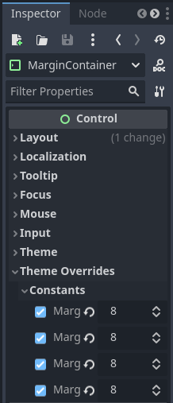
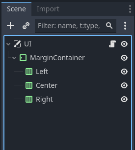
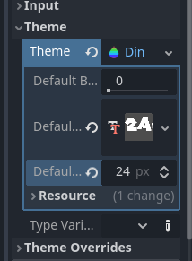

Setting up the UI
This page will get you started with our UI, or user interface.
Creating the UI Scene
UI, or User Interface, is the term for all the elements of the game that provide information to the player. Some examples of this would be level timers, pause menus, life counters and scoreboards. In order to add such elements to our game we need to first make a new scene. Our root node for the scene will be a CanvasLayer, which is a special node that follows the camera (very important for UI elements.) Lets name our canvas layer UI.
UI and CanvasLayers can be pretty unintuitive, but we will cover enough to hopefully make a semblence of sense. For more details you can check out Godot's documentation Here
Next, add a new MarginContainer node to the UI node as a child. Then, while the margin container is selected, go to the 2D screen of the viewport and you will see new options on the top appear. One should appear like a circle with a t in it, select it, then select the full option (the solid square.)

Doing this sets the node's Anchors. Anchor's are the relative points the node uses to automatically scale itself to the camera. By selecting full, this node will use the current window's size for it's scale. Next we want to set the margin container's margins, or how much space we want the UI to have from the edge of the screen. We can do this by going to the inspector, navigating to the themes overrides section, checking all the margins and setting them to a number (I will be using a margin of 8 pixels.)
After that we can start setting up our columns by using HBoxContainers. Select the margin container and add 3 new HBoxContainer nodes as children. For the first one, change it's name to Left, then in the inspector change it's alignment property to begin. Then, repeat the same steps with the other two h-box containers except naming one Center with an alignment of center and the other named Right with an alignment of end.
Setting up our UI Theme
Of course, right now we have nothing to show in our UI! We can quickly add a test node by selecting one of our columns and adding a VBoxContainer node, then adding a new label node to the v-box container (the v-box container is there to make sure the label shows up at the top of the screen.) Then, in the inspector, change your label's text to some value.

You should see your text appear in the viewport. However, the default font may not be what you were looking for. In order to change the font we need to make a new Theme. Themes are a collection of options that change how your UI elements look. But before we create a theme, we will need a font. Go ahead and open up the UI folder in your VGDC-2024 Assets folder, select a font file you like and drag it into your file system.
If you are not taking this course in person, you can download the assets Here
Next, select the margin container, then in the inspector find the theme section and create a new theme. A new editor will pop up in the bottom panel, but for setting a font all you need to do is drag your font file into the default font property in the inspector (and optionally set the default font size.)
Finally, save your UI scene, then you can add it to your world scene to have it appear in game.
Themes can actually do quite a bit. To have more details about what they can do check out Godot's documentation Here
And you're done! Go ahead and test out some more UI elements or go on to another module!